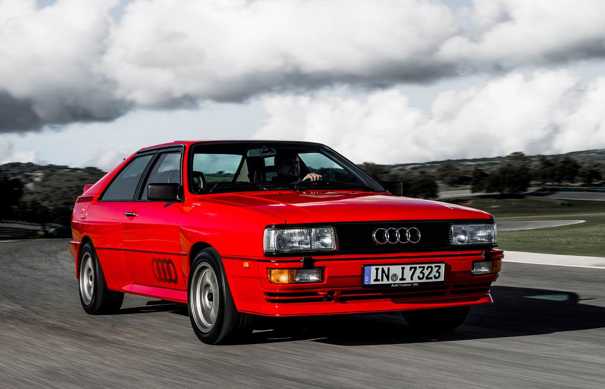

El Audi Quattro es un ícono del automovilismo, famoso por su sistema de tracción integral permanente y su éxito en el mundo de los rallyes. Introducido en 1980, marcó un hito significativo en la historia de Audi y en el desarrollo de vehículos de alto rendimiento.

Historia y Desarrollo
El Audi Quattro fue presentado en el Salón del Automóvil de Ginebra de 1980 como el primer automóvil de producción en masa con tracción integral permanente. Esta innovadora tecnología permitió al Quattro dominar en competiciones de rally, cambiando para siempre el panorama automovilístico.
Éxitos en Competición
El Quattro no solo fue un éxito en las carreteras, sino también en las pistas de rally. Ganó múltiples campeonatos mundiales y eventos destacados como el Rally de Monte Carlo y el Rally de Gran Bretaña, estableciendo a Audi como una fuerza dominante en el deporte del motor.
Campeonato Mundial de Rally de 1982.
Rally de Monte Carlo.
Rally de Gran Bretaña.
Características Técnicas
Sistema de tracción integral permanente (quattro).
Motor turboalimentado de 5 cilindros.
Potencia: 200 CV.
Velocidad máxima: 220 km/h.
Aceleración 0-100 km/h: 7.1 segundos.
Estas características técnicas colocaron al Audi Quattro como un referente en términos de rendimiento y tecnología en su época, estableciendo estándares que aún se valoran en la industria automotriz.
Impacto y Legado
El legado del Audi Quattro continúa siendo relevante en la actualidad. Su tecnología de tracción integral permanente ha sido adoptada en muchos otros modelos de Audi, demostrando su durabilidad y efectividad en diversas condiciones de manejo.
Además de su impacto en el deporte del motor, el Audi Quattro sentó las bases para futuros desarrollos tecnológicos en la industria automotriz, consolidando la reputación de Audi como líder en innovación y rendimiento.